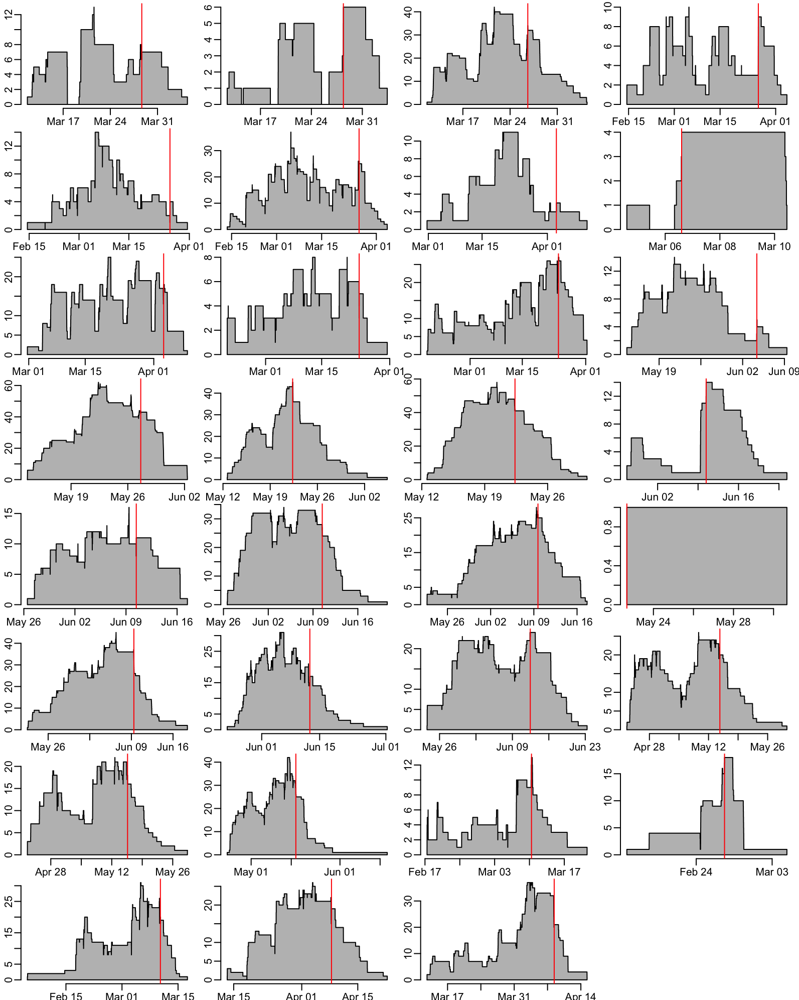

path2data <- paste0("/Users/", Sys.getenv("USER"), "/Library/CloudStorage/",
"OneDrive-OxfordUniversityClinicalResearchUnit/",
"GitHub/choisy/60HN/")60HN: CRE burden at admission and discharge
1 Constants
The folder that contains the data files:
The name of the file that contains the discharge dates of the patients that did not provide samples at discharge:
discharge_file <- "60HN - DischargeDate_no_discharge_sample_27Nov25.xlsx"The name of the CRF data file:
CRF_file <- "25-11-2025-_60HN_PATIENT_P1_Data.xls"The name of the MALDI-TOF data file:
MALDITOF_file <- paste0("60HN_LAB_ID_20251014_merged_Blue and",
" pink_confirmed by Maldi-TOF.xlsx")2 Packages
Required packages:
required <- c("readxl", "purrr", "dplyr", "lubridate", "magrittr", "tidyr", "msm",
"rlang")Installing those that are not installed yet:
to_install <- required[! required %in% installed.packages()[,"Package"]]
if (length(to_install)) install.packages(to_install)Loading the packages for interactive use:
invisible(sapply(required, library, character.only = TRUE))3 General functions
A function that pastes a vector of dates and a vector of times both in character format and returns a dttm vector:
as_datetime2 <- function(date, time) {
as_datetime2_ <- function(date, time) {
if (is.na(date)) return(NA)
if (is.na(time)) time <- "12:00:00" # if only time is missing, we fix it to noon
as_datetime(paste(date, time))
}
map2_vec(date, time, as_datetime2_)
}A function that converts a column col of a data frame x into a list-column (assuming that all the other columns have the same values across rows):
col2listcol <- function(x, col) {
x |>
select(- {{ col }}) |>
head(1) |>
bind_cols(tibble("{{col}}" := list(pull(x, {{ col }}))))
}A tuning of the hist() function:
hist2 <- function(x, ...) hist(x, floor(min(x)):ceiling(max(x)), ...)A tuning of the msm() function for a bi-state bi-directional case:
bsm <- function(formula, subject, data, ...) {
output <- do.call(msm::msm, c(list(formula = formula,
subject = substitute(subject),
data = data,
qmatrix = matrix(c(0:1, 1:0), 2)), list(...)))
output$call <- match.call()
output
}A function that bootstraps estimates of the fitted multistate model msm_fit where f is the function that generates the estimates and N is the number of bootstrap repetitions:
boot_msm <- function(msm_fit, f = qmatrix.msm, N = 1000) {
msm_fit |>
boot.msm(function(x) f(x)$estimates, N) |>
unlist() |>
array(dim = c(dim(msm_fit$Qmatrices$baseline), N))
}A function that generates statistic f estimates from bootstrap samples boot_samples outputed by boot_msm():
boot_stat <- function(boots_samples, f = sd) {
output <- apply(boots_samples, 1:2, f)
mat_names <- paste("State", 1:nrow(output))
colnames(output) <- mat_names
rownames(output) <- mat_names
output
}A function that generates a ci% confidence interval from bootstrap samples boot_samples outputed by boot_msm():
boot_ci <- function(boots_samples, ci = .95) {
ci <- (1 - ci) / 2
output <- apply(boots_samples, 1:2, function(x) quantile(x, c(ci, 1 - ci)))
mat_names <- paste("State", 1:ncol(output))
dimnames(output) <- list(rownames(output[, , 1]), mat_names, mat_names)
aperm(output, c(1, 3, 2))
}4 Discharge dates
Loading the discharge dates for the patients who did not provide any sample at discharge:
(discharge_dates <- paste0(path2data, discharge_file) |>
read_excel() |>
mutate(across(`Discharge date`, ~ .x + hours(12))) |> # setting time to noon
select(-No, -SiteID, -`Discharge date (2)`))# A tibble: 96 × 2
USUBJID `Discharge date`
<chr> <dttm>
1 010-3-1-05 2025-02-23 12:00:00
2 010-1-1-10 2025-02-24 12:00:00
3 010-1-1-22 2025-02-25 12:00:00
4 010-1-1-26 2025-02-28 12:00:00
5 010-2-1-09 2025-03-06 12:00:00
6 010-2-1-22 2025-03-06 12:00:00
7 010-3-1-09 2025-03-06 12:00:00
8 010-3-1-39 2025-03-23 12:00:00
9 010-3-1-36 2025-03-17 12:00:00
10 010-3-1-42 2025-03-25 12:00:00
# ℹ 86 more rows5 CRF data
Reading the data:
file <- paste0(path2data, CRF_file)
sheets <- file |>
excel_sheets() |>
head(-1)
CRF <- sheets |>
map(read_excel, path = file) |>
setNames(sheets) |>
map(~ .x |> # de-duplication of records
group_by(USUBJID) |>
group_modify(~ .x |>
arrange(desc(entry)) |>
first()) |>
ungroup())5.1 Samples dates
The dates of samples collection at admission and discharge:
dates <- CRF |>
extract2("SCR") |>
select(USUBJID, SPEC_DATE_ADMISSION, SPEC_TIME_ADMISSION,
SPEC_DATE_DISCHARGE, SPEC_TIME_DISCHARGE) |>
mutate(ADMISSION = as_datetime2(SPEC_DATE_ADMISSION, SPEC_TIME_ADMISSION),
DISCHARGE = as_datetime2(SPEC_DATE_DISCHARGE, SPEC_TIME_DISCHARGE)) |>
select(- SPEC_DATE_ADMISSION, - SPEC_TIME_ADMISSION,
- SPEC_DATE_DISCHARGE, - SPEC_TIME_DISCHARGE)which gives:
dates# A tibble: 2,000 × 3
USUBJID ADMISSION DISCHARGE
<chr> <dttm> <dttm>
1 008-1-1-01 2025-03-11 16:30:00 2025-03-13 14:40:00
2 008-1-1-02 2025-03-12 10:00:00 2025-03-14 10:00:00
3 008-1-1-03 2025-03-12 09:50:00 2025-03-14 09:50:00
4 008-1-1-04 2025-03-12 13:45:00 2025-03-13 14:55:00
5 008-1-1-05 2025-03-12 13:40:00 2025-03-28 17:00:00
6 008-1-1-06 2025-03-12 12:30:00 2025-03-20 14:25:00
7 008-1-1-07 2025-03-12 14:40:00 2025-03-14 10:30:00
8 008-1-1-08 2025-03-12 14:30:00 2025-03-17 10:10:00
9 008-1-1-09 2025-03-12 14:50:00 2025-03-14 09:40:00
10 008-1-1-10 2025-03-12 15:10:00 2025-03-17 14:40:00
# ℹ 1,990 more rowsThe number of missing samples at discharge:
dates |>
filter(is.na(DISCHARGE)) |>
nrow()[1] 96Verifying that DISCHARGE is after ADMISSION:
dates |>
na.exclude() |>
filter(DISCHARGE < ADMISSION)# A tibble: 0 × 3
# ℹ 3 variables: USUBJID <chr>, ADMISSION <dttm>, DISCHARGE <dttm>5.2 Wards
From Huong:
“I just realize that there is one significant factor that would significantly contribute the force of infection (colonization) during hospitalization. This is the fact that patients from the same clinical ward can transmit CRE between one another. Therefore it would be best if the model can include the possibility within-ward transmission versus between within-hospital transmission. The ward type variable can identify the patients in the same ward or not. I think this should be the first priority to add.”
Generating the ward data:
(wards <- CRF$ADM |>
mutate(across(starts_with("WARD"), as.numeric),
ward = paste0(SITEID, WARD_1, WARD_2, WARD_3)) |>
arrange(SITEID) |>
select(USUBJID, ward))# A tibble: 2,000 × 2
USUBJID ward
<chr> <chr>
1 008-1-1-01 008100
2 008-1-1-02 008100
3 008-1-1-03 008100
4 008-1-1-04 008100
5 008-1-1-05 008100
6 008-1-1-06 008100
7 008-1-1-07 008100
8 008-1-1-08 008100
9 008-1-1-09 008100
10 008-1-1-10 008100
# ℹ 1,990 more rowsAn overview of the number of patients per wards:
wards |>
group_by(ward) |>
tally() |>
print(n = Inf)# A tibble: 31 × 2
ward n
<chr> <int>
1 008001 32
2 008010 16
3 008100 102
4 010001 47
5 010010 46
6 010100 157
7 071001 25
8 071100 5
9 071110 120
10 073001 35
11 073110 115
12 130001 40
13 130100 110
14 155001 69
15 155110 81
16 156001 20
17 156010 40
18 156100 90
19 157001 70
20 157100 1
21 157110 79
22 158001 89
23 158100 61
24 159001 83
25 159010 64
26 159100 103
27 160001 37
28 160100 24
29 160110 89
30 161001 61
31 161100 895.3 Exposure
A function that computes the data for ward occupancy:
ward_occupancy <- function(x) {
f <- function(...) pivot_longer(..., names_to = "change", values_to = "date")
bind_rows(f(select(x, -DISCHARGE), ADMISSION),
f(select(x, -ADMISSION), DISCHARGE)) |>
arrange(date) |>
mutate(across(change, ~ setNames(c(1, -1), c("ADMISSION", "DISCHARGE"))[.x]),
occupancy = cumsum(change))
}A function that plots a ward occupancy:
plot_occ <- function(x, y, ...) {
x |>
first() |>
mutate(occupancy = 0) |>
bind_rows(x) |>
with({
plot(date, occupancy, type = "n", ...)
polygon(c(head(date, 2), rep(tail(date, -2), each = 2)),
c(first(occupancy),
rep(tail(head(occupancy, -1), -1), each = 2),
last(occupancy)), col = "grey")
})
abline(v = y, col = "red")
}where x is an output from ward_occupancy() and y is the date of the last admission of the ward. Putting the ward and dates data together, using discharge_dates for patients who did not provide any sample at discharge (for the latter, the time is set to noon and, for those who have admission and discharge the same day with admission in the afternoon, discharge time is then set to one hour after admission):
(ward_dates <- wards |>
left_join(dates, "USUBJID") |>
left_join(discharge_dates, "USUBJID") |>
mutate(across(DISCHARGE, ~ if_else(is.na(.x), `Discharge date`, .x)),
across(DISCHARGE, ~ if_else(as_date(DISCHARGE) == as_date(ADMISSION) &
DISCHARGE < ADMISSION,
ADMISSION + hours(1), DISCHARGE))) |>
select(- `Discharge date`))# A tibble: 2,000 × 4
USUBJID ward ADMISSION DISCHARGE
<chr> <chr> <dttm> <dttm>
1 008-1-1-01 008100 2025-03-11 16:30:00 2025-03-13 14:40:00
2 008-1-1-02 008100 2025-03-12 10:00:00 2025-03-14 10:00:00
3 008-1-1-03 008100 2025-03-12 09:50:00 2025-03-14 09:50:00
4 008-1-1-04 008100 2025-03-12 13:45:00 2025-03-13 14:55:00
5 008-1-1-05 008100 2025-03-12 13:40:00 2025-03-28 17:00:00
6 008-1-1-06 008100 2025-03-12 12:30:00 2025-03-20 14:25:00
7 008-1-1-07 008100 2025-03-12 14:40:00 2025-03-14 10:30:00
8 008-1-1-08 008100 2025-03-12 14:30:00 2025-03-17 10:10:00
9 008-1-1-09 008100 2025-03-12 14:50:00 2025-03-14 09:40:00
10 008-1-1-10 008100 2025-03-12 15:10:00 2025-03-17 14:40:00
# ℹ 1,990 more rowsVerifying that DISCHARGE is after ADMISSION:
ward_dates |>
na.exclude() |>
filter(DISCHARGE < ADMISSION)# A tibble: 0 × 4
# ℹ 4 variables: USUBJID <chr>, ward <chr>, ADMISSION <dttm>, DISCHARGE <dttm>Computing the dates of last admissions for each ward:
last_admissions <- ward_dates |>
select(-DISCHARGE) |>
na.exclude() |>
group_by(ward) |>
group_modify(~ .x |>
arrange(ADMISSION) |>
last()) |>
ungroup() |>
pull(ADMISSION)Computing and plotting the ward occupancies:
opar <- par(mfrow = c(8, 4))
ward_dates |>
group_by(ward) |>
group_map(~ ward_occupancy(.x), .keep = TRUE) |>
walk2(last_admissions, plot_occ, ann = FALSE)
par(opar)
5.4 Durations
The distribution of the durations of stay in the wards:
ward_dates |>
mutate(duration = as.numeric(DISCHARGE - ADMISSION) / 1440) |>
pull(duration) |>
hist2(xlab = "duration of stay (days)", ylab = "number of patients")
6 MALDI-TOF data
Reading the MALDI-TOF data:
(MALDITOF <- path2data |>
paste0(MALDITOF_file) |>
read_excel() |>
select(USUBJID, SampleSchedule, Identification_MALDITOF))# A tibble: 1,221 × 3
USUBJID SampleSchedule Identification_MALDITOF
<chr> <chr> <chr>
1 010-1-1-01 ADMISSION Klebsiella pneumoniae
2 160-1-1-09 ADMISSION Enterobacter hormaechei
3 160-2-1-06 ADMISSION Klebsiella pneumoniae
4 160-2-1-04 ADMISSION Enterobacter hormaechei
5 160-2-1-04 DISCHARGE Enterobacter hormaechei
6 010-1-1-06 DISCHARGE Enterobacter cloacae
7 010-1-1-01 DISCHARGE Klebsiella pneumoniae
8 010-1-1-14 ADMISSION Enterococcus faecium
9 010-1-1-14 ADMISSION Klebsiella aerogenes
10 160-2-1-06 DISCHARGE Klebsiella pneumoniae
# ℹ 1,211 more rowsThe distribution of bacteria across the samples:
MALDITOF |>
group_by(Identification_MALDITOF) |>
tally() |>
mutate(`%` = round(100 * n / sum(n), 1)) |>
arrange(desc(n))# A tibble: 25 × 3
Identification_MALDITOF n `%`
<chr> <int> <dbl>
1 Escherichia coli 829 67.9
2 Klebsiella pneumoniae 197 16.1
3 Enterobacter hormaechei 71 5.8
4 Enterococcus faecium 25 2
5 Enterobacter cloacae 24 2
6 No organism identification possible 24 2
7 Klebsiella aerogenes 10 0.8
8 Aeromonas caviae 7 0.6
9 Citrobacter freundii 7 0.6
10 Enterobacter kobei 4 0.3
# ℹ 15 more rowsThe list of samples:
(MALDITOF_samples <- MALDITOF |>
select(- Identification_MALDITOF) |>
unique())# A tibble: 1,055 × 2
USUBJID SampleSchedule
<chr> <chr>
1 010-1-1-01 ADMISSION
2 160-1-1-09 ADMISSION
3 160-2-1-06 ADMISSION
4 160-2-1-04 ADMISSION
5 160-2-1-04 DISCHARGE
6 010-1-1-06 DISCHARGE
7 010-1-1-01 DISCHARGE
8 010-1-1-14 ADMISSION
9 160-2-1-06 DISCHARGE
10 010-3-1-01 DISCHARGE
# ℹ 1,045 more rowsLet’s look at the number of patients that have a sample at discharge only, at admission only and at both admission and discharge:
MALDITOF_samples |>
mutate(state = 1) |>
pivot_wider(names_from = SampleSchedule, values_from = state) |>
mutate(across(-USUBJID, ~ ! is.na(.x))) |>
group_by(ADMISSION, DISCHARGE) |>
tally() |>
ungroup()# A tibble: 3 × 3
ADMISSION DISCHARGE n
<lgl> <lgl> <int>
1 FALSE TRUE 445
2 TRUE FALSE 118
3 TRUE TRUE 2467 Specific functions
A function that generates the presence/absence data from the output x of the MALDITOF where id is the column of x that contains the patient ID, time_point is the column of x that contains the time point of the sample (e.g. ADMISSION or DISCHARGE), identification is the column of x that contains the bacteria identified by the MALDITOF and bacteria is a vector of characters that contains the names of the bacteria that we want to test the presence of.
presence_abscence <- function(x, id, time_point, identification, bacteria) {
x |>
group_by({{ id }}, {{ time_point }}) |>
group_modify(~ col2listcol(.x, {{ identification }})) |>
ungroup() |>
mutate(state = map_lgl({{ identification }}, ~ any(bacteria %in% .x)) + 1) |>
select(- {{ identification }}) |>
arrange({{ id }}, {{ time_point }})
}A function that selects patients from x who have samples from at least 2 time points:
select2time_points <- function(x, id) {
id_with_2obs <- x |>
pull({{ id }}) |>
table() |>
is_greater_than(1) |>
which() |>
names()
filter(x, {{ id }} %in% id_with_2obs)
}where id is the column of x that contains the patients IDs. A function that combines state and time data:
state_time <- function(state, time, id, admission, discharge, time_point) {
time |>
mutate("{{discharge}}" := as.numeric({{ discharge }} - {{ admission }}) / 1440,
"{{admission}}" := 0) |>
pivot_longer(- {{ id }},
names_to = as_name(enquo(time_point)), values_to = "days") |>
left_join(x = {{ state }}, y = _,
c(as_name(enquo(id)), as_name(enquo(time_point))))
}The following function puts the 3 above functions together:
msm_data <- function(x, y, id, time_point, identification, bacteria,
admission, discharge) {
x |>
presence_abscence({{ id }}, {{ time_point }}, {{ identification }}, bacteria) |>
select2time_points({{ id }}) |>
state_time(y, {{ id }}, {{ admission }}, {{ discharge }}, {{ time_point }})
}8 K. pneumoniae
8.1 Preparing the data
Generating the presence/absence of K. pneumoniae:
K_pneumoniae_raw <- presence_abscence(MALDITOF, USUBJID, SampleSchedule,
Identification_MALDITOF, "Klebsiella pneumoniae")Which gives:
K_pneumoniae_raw# A tibble: 1,055 × 3
USUBJID SampleSchedule state
<chr> <chr> <dbl>
1 008-1-1-05 ADMISSION 1
2 008-1-1-05 DISCHARGE 2
3 008-1-1-07 ADMISSION 1
4 008-1-1-07 DISCHARGE 1
5 008-1-1-08 ADMISSION 1
6 008-1-1-08 DISCHARGE 1
7 008-1-1-100 DISCHARGE 1
8 008-1-1-14 ADMISSION 1
9 008-1-1-14 DISCHARGE 1
10 008-1-1-15 DISCHARGE 1
# ℹ 1,045 more rowsSelecting the patients that have samples from at least 2 time points:
K_pneumoniae <- select2time_points(K_pneumoniae_raw, USUBJID)Making the dataset for the multistate modelling:
(Kp_msm <- state_time(K_pneumoniae, dates, USUBJID,
ADMISSION, DISCHARGE, SampleSchedule))# A tibble: 492 × 4
USUBJID SampleSchedule state days
<chr> <chr> <dbl> <dbl>
1 008-1-1-05 ADMISSION 1 0
2 008-1-1-05 DISCHARGE 2 16.1
3 008-1-1-07 ADMISSION 1 0
4 008-1-1-07 DISCHARGE 1 1.83
5 008-1-1-08 ADMISSION 1 0
6 008-1-1-08 DISCHARGE 1 4.82
7 008-1-1-14 ADMISSION 1 0
8 008-1-1-14 DISCHARGE 1 11.8
9 008-1-1-24 ADMISSION 2 0
10 008-1-1-24 DISCHARGE 2 6.86
# ℹ 482 more rowsAlternatively, we can do all at once with this function:
Kp_msm <- msm_data(MALDITOF, dates, USUBJID, SampleSchedule, Identification_MALDITOF,
"Klebsiella pneumoniae", ADMISSION, DISCHARGE)which gives:
Kp_msm# A tibble: 492 × 4
USUBJID SampleSchedule state days
<chr> <chr> <dbl> <dbl>
1 008-1-1-05 ADMISSION 1 0
2 008-1-1-05 DISCHARGE 2 16.1
3 008-1-1-07 ADMISSION 1 0
4 008-1-1-07 DISCHARGE 1 1.83
5 008-1-1-08 ADMISSION 1 0
6 008-1-1-08 DISCHARGE 1 4.82
7 008-1-1-14 ADMISSION 1 0
8 008-1-1-14 DISCHARGE 1 11.8
9 008-1-1-24 ADMISSION 2 0
10 008-1-1-24 DISCHARGE 2 6.86
# ℹ 482 more rows8.2 Multi-state modelling
Defining the structure of the \(Q\) matrix:
Q <- rbind(c(0, 1),
c(1, 0))Initial values of the \(Q\) matrix:
(Q_crude <- crudeinits.msm(state ~ days, USUBJID, Q, Kp_msm)) [,1] [,2]
[1,] -0.01549307 0.01549307
[2,] 0.05251641 -0.05251641Fitting a simple model without any covariate:
(Kp_msm_fit <- msm(state ~ days, USUBJID, Kp_msm, Q))
Call:
msm(formula = state ~ days, subject = USUBJID, data = Kp_msm, qmatrix = Q)
Maximum likelihood estimates
Transition intensities
Baseline
State 1 - State 1 -0.02226 (-0.03751,-0.01321)
State 1 - State 2 0.02226 ( 0.01321, 0.03751)
State 2 - State 1 0.08524 ( 0.04827, 0.15052)
State 2 - State 2 -0.08524 (-0.15052,-0.04827)
-2 * log-likelihood: 168.2813 Or we call simply do:
(Kp_msm_fit <- bsm(state ~ days, USUBJID, Kp_msm))
Call:
bsm(formula = state ~ days, subject = USUBJID, data = Kp_msm)
Maximum likelihood estimates
Transition intensities
Baseline
State 1 - State 1 -0.02226 (-0.03751,-0.01321)
State 1 - State 2 0.02226 ( 0.01321, 0.03751)
State 2 - State 1 0.08524 ( 0.04827, 0.15052)
State 2 - State 2 -0.08524 (-0.15052,-0.04827)
-2 * log-likelihood: 168.2813 Estimated transition intensity \(Q\) matrix:
qmatrix.msm(Kp_msm_fit) State 1 State 2
State 1 -0.02226 (-0.03751,-0.01321) 0.02226 ( 0.01321, 0.03751)
State 2 0.08524 ( 0.04827, 0.15052) -0.08524 (-0.15052,-0.04827)Estimated transition probability \(P\) matrix per day:
pmatrix.msm(Kp_msm_fit) State 1 State 2
State 1 0.97889553 0.02110447
State 2 0.08081981 0.91918019Estimated mean sojourn times in each transient state:
sojourn.msm(Kp_msm_fit) estimates SE L U
State 1 44.92531 11.958663 26.663052 75.69589
State 2 11.73134 3.403574 6.643418 20.71590Log-likelihood of the model:
logLik(Kp_msm_fit)'log Lik.' -84.14066 (df=2)8.2.1 Bootstrapped CIs
Bootstrapping \(Q\) estimates (1000 samples):
q_list <- boot.msm(Kp_msm_fit, function(x) qmatrix.msm(x)$estimates, 1000)Reformating the output into an array of dimension 2, 2, and 1000 (i.e. 2 states and 1000 bootstrap samples):
q_array <- array(unlist(q_list), dim = c(2, 2, 1000))Or we can simply do instead of the above two successive command lines:
q_array <- boot_msm(Kp_msm_fit, qmatrix.msm, 1000)The bootstrap estimate of the standard deviation:
apply(q_array, 1:2, sd) [,1] [,2]
[1,] 0.0188061 0.0188061
[2,] 0.1173902 0.1173902Or, equivalently, in a formatted output:
boot_stat(q_array) State 1 State 2
State 1 0.0188061 0.0188061
State 2 0.1173902 0.1173902And with the mean:
boot_stat(q_array, mean) State 1 State 2
State 1 -0.02352466 0.02352466
State 2 0.09330823 -0.09330823Or the median:
boot_stat(q_array, median) State 1 State 2
State 1 -0.02229714 0.02229714
State 2 0.08734558 -0.08734558The bootstrap estimate of the 95% confidence interval:
q_array |>
apply(1:2, function(x) quantile(x, c(.025, .975))) |>
aperm(c(1, 3, 2)), , 1
[,1] [,2]
2.5% -0.03799493 0.01192171
97.5% -0.01192171 0.03799493
, , 2
[,1] [,2]
2.5% 0.04534553 -0.15580629
97.5% 0.15580629 -0.04534553Or, equivalently, in a formatted output:
boot_ci(q_array), , State 1
State 1 State 2
2.5% -0.03799493 0.01192171
97.5% -0.01192171 0.03799493
, , State 2
State 1 State 2
2.5% 0.04534553 -0.15580629
97.5% 0.15580629 -0.04534553